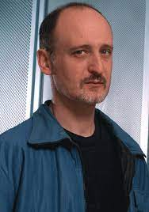

[Brody Condon]
Stats:
background in performance art and sculpture, moved to digital media
"It was clear, to us anyway, that these [video games] were propaganda spaces. These were spaces where right wing ideology was living an extreme. The nonstop destruction of the other in an arena that never quits."
- Condon
[Anne-Marie Schleiner]
Stats:
artist, game studies scholar, speciality: game modification
"I was excited at that time with the possibility of public space being extended into the virtual and using game space as a place to get a public message out."
- Schleiner
[Joan Leandre]

Stats:
observer, researcher, contemporary artist
"It was a straightforward, a very emotional reaction to what was happening in that moment,”..."In that moment everything seemed to be very simple. But years later, things are much more complicated."
- Leandre